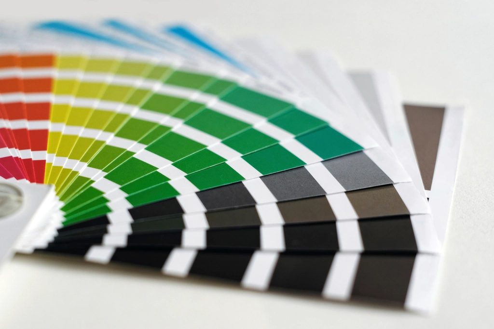
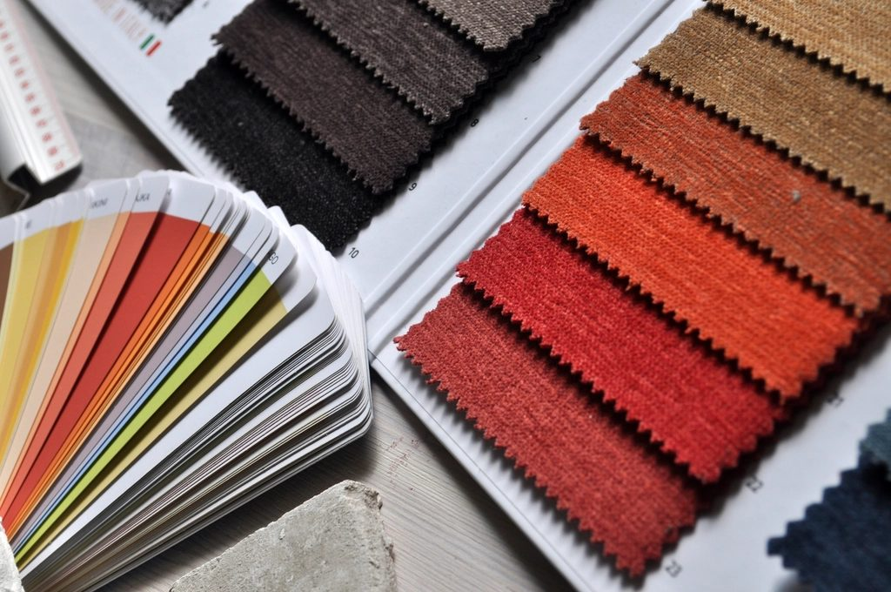

公開(確認できた情報)
- +店名: PARK PARK PATCH PATCH
- +業種: カフェ
- +所在地: 〒922-0446 石川県加賀市塩浜町ち−２３
- +電話: 0761-75-7129(Googleマップ記載)
- +Instagram: @parkparkpatchpatch
- …営業時間・定休日・メニュー・価格・ご予約・駐車場: 準備中(未確認のため載せていません)
RELEASE NOTES / カフェ
石川県加賀市のカフェ「PARK PARK PATCH PATCH」のご案内ページです。営業時間やメニューなど、詳しいことは準備中。まずは Instagram をのぞいてみてください。
制作側の連想
店名に同じ語が二回ずつ並んでいるのが目にとまり、「PATCH」という語からソフトウェアの更新履歴(パッチノート)を連想しました。そこでこのサイトは、1ページごとにバージョンが上がる更新履歴の形で並べています。制作側の連想で、お店の理念・由来とは無関係です。店名の由来は分かりません。
パッチの色見本
「PATCH」から連想した、色の見本のようなイメージ写真です。お店の写真ではありません。

